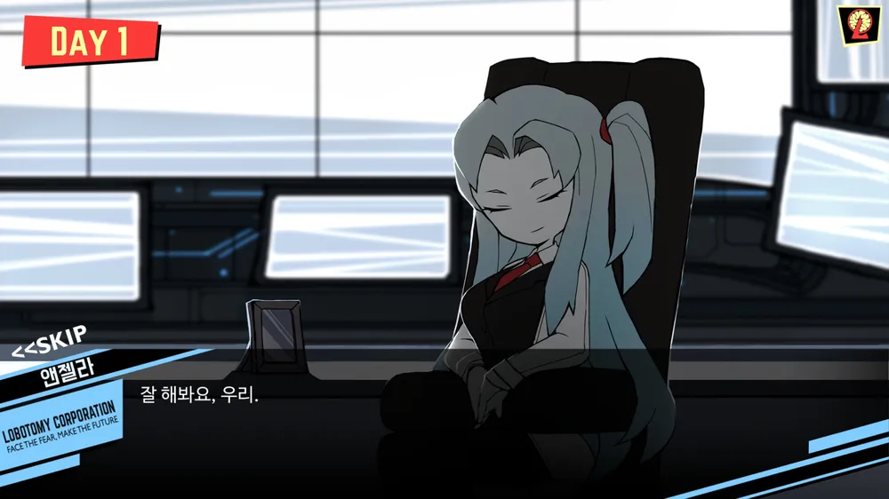
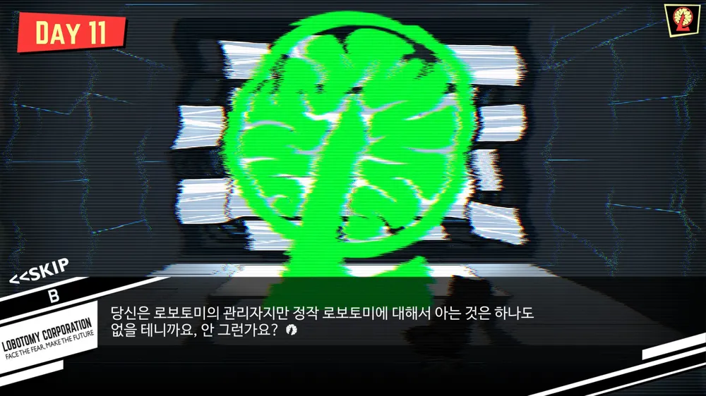
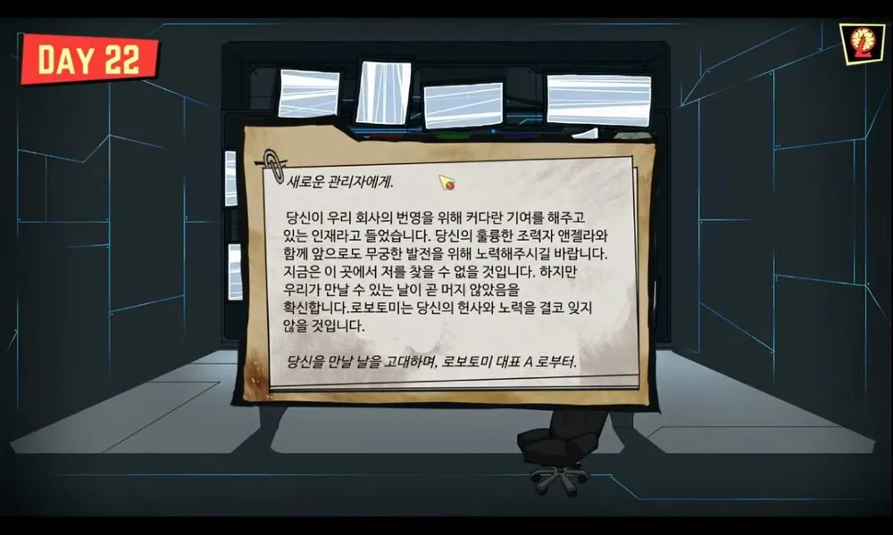
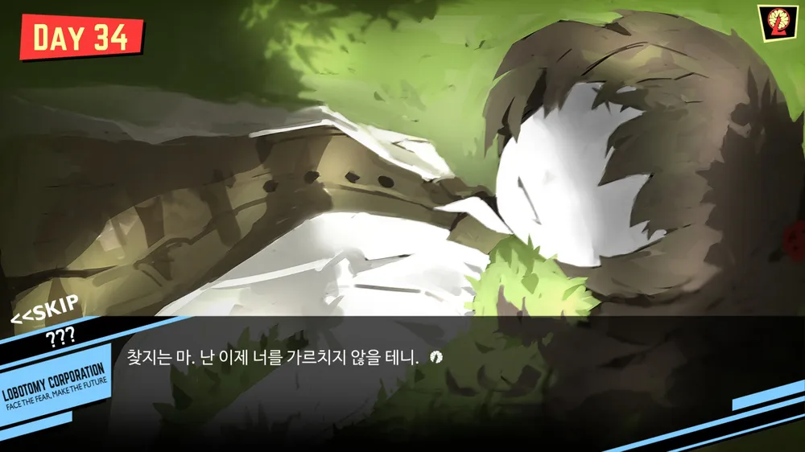
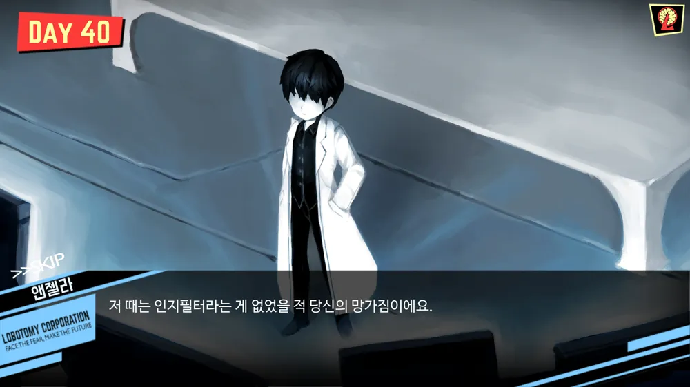
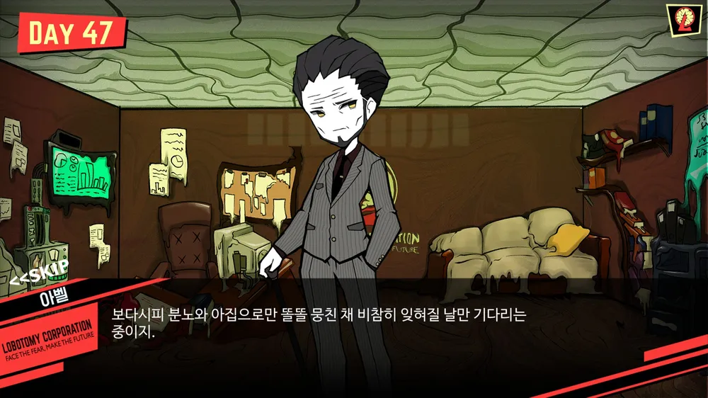
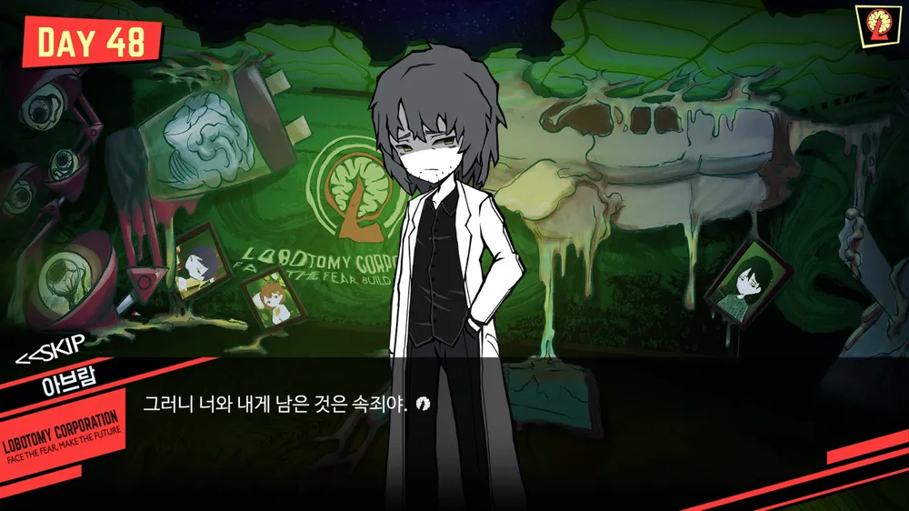
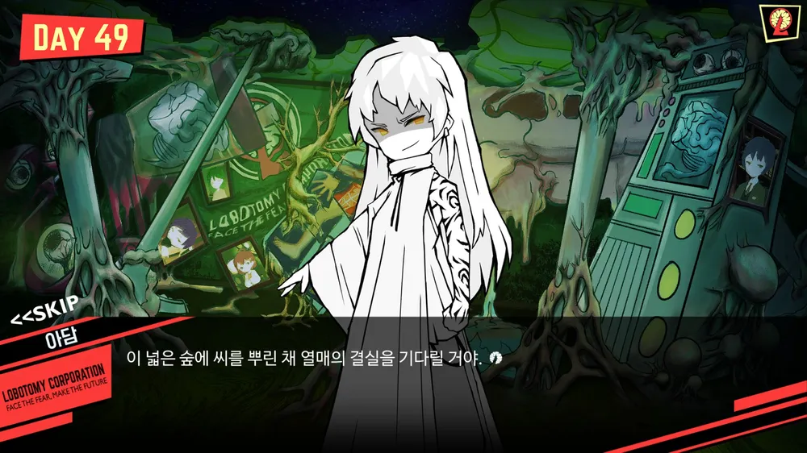
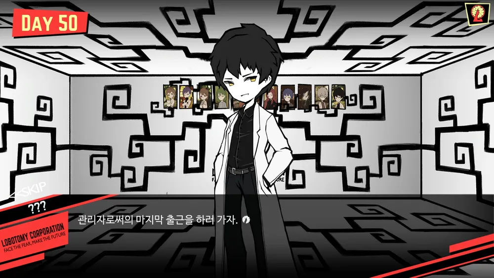

처음 입사한 날 앤젤라가 자신을 소개하며 회사 또는 자신에 대해 간단한 설명을 해주는 것으로 게임이 시작된다.
2일차에 앤젤라가 회사의 슬로건 "공포에 직면하여 미래를 창조하라"를 언급하며 '공포에 직면'과 '미래를 창조'하는 것 중 어느 것이 마음에 드냐고 질문한다. 이때 무슨 대답을 하든 호의적인 답변을 한다.
3일차에 앤젤라는 숫자 3은 신비로운 숫자라고 언급하며 자신은 동화 속 마녀들처럼 마법을 부릴 수는 없지만 소원을 말해보라 이야기한다. 그러면서 이곳에 머물렀던 많은 관리자들의 소원에 대해 알고 있다면서 모두 하나 같이 '성숙'을 꿈꾸었다는 이야기를 전한다. 이때 '회사의 번영'과 '영혼의 성숙' 두 가지 중 하나를 고를 수 있다.
대답이 끝난 후, 앤젤라는 이전 관리자들이 각자의 소원을 이루었는지에 대해 말하지 않는다. 다른 사람들의 결과는 중요하지 않다며, 관리자가 원하는 곳에 닿을 수 있기를 응원한다고 말한다.
4일차에 관리자가 이곳에 오고부터 에너지 수치가 13% 증가했으며 이것은 엄청난 수치라고 소감이 어떻냐고 묻는다. 이때 대답은 '기쁘다.' 또는 '모르겠다.'라고 할 수 있다.
대답이 끝나고, 앤젤라는 오늘 처음으로 직원이 죽었다며 이 일을 기억하며 더욱 나아가기 위해 기념으로 샴페인을 가져온다. 그러면서 죽은 직원에 너무 유념치 말라며, 그들은 이 모든 일을 각오했고, 명예롭게 죽었을 것이라 말하며 건배를 외친다. 이때 '샴페인을 마신다.'나 '마시지 않는다.'를 선택할 수 있다.
5일차에 앤젤라는 창립자 A가 "실험이 많아질수록 당신은 더 좋은 사람이 된다."라는 말을 했고 그건 당신도 마찬가지라며 당신이 살아온 인생이 어떠했는지를 묻는다. 이때 '형편 없었다.', '괜찮았다.', '괜찮지 않았다.' 라는 대답을 할 수 있다.
관리자의 대답을 들은 후 앤젤라는 나무의 비유를 든다. 운이 좋은 경우 비옥한 땅에 씨앗이 내려앉을 수 있지만, 대개의 경우 그렇지 않다면서 싹을 틔우기 위해 수많은 시간과 고통을 함께 해야 한다. 앤젤라 본인은 관리자에게 물을 주거나 햇볕을 내리쬐게 할 수는 없지만, 최선을 다해 땅을 고르게 해주겠다는 말을 한다.
6일차에 앤젤라는 이 회사엔 수많은 직원들이 있으며 그 중 몇몇 적극적인 직원은 관리자님을 찾으러 올 수도 있다고 말한다. 회사 규칙으로는 막을 만한 규정이 없고, 규칙을 만든 사람 역시 직원이 관리자실에 들어올 것이라 예상하지 못했기에 그렇다고 한다.
사실 관리자가 누구든 직원들의 삶이 바뀌진 않을 테지만, 앤젤라는 직원들 사이엔 소문이 잘 퍼지는 만큼 문을 여는 것도 좋겠다고 말한다. 물론 문을 여는 것으로도 충분했으니 그들의 요구를 들어 줄 필요까지는 없다고 한다. 그저 회사에 보내는 노고에 감사하고, 앞으로도 지금처럼 회사의 번영에 힘써 달라는 이야기만 건네라며, 서로에게 그 편이 좋지 않겠느냐고 말한다. 관리자는 이미 문을 열어준 시점에서 자신의 역할을 충분히 해내었으며, 괜한 아량을 베푼다며 말도 안 되는 요구에 일일이 응하지 말라 한다. 자판기를 설치해 주면 맥주 자판기까지 원하는 게 사람이라는 말을 덧붙이면서, 그 정도의 분별력은 있는 사람일 것이라고 믿는다고 한다.
7일차에 앤젤라는 관리자님은 당신 생각보다 훨씬 대단하다며 높으신 분들이 당신을 눈여겨보고 있다고 말한다. 그 중엔 지난번에 언급한 A도 있다고 한다. 앤젤라는 관리자에게 A에 대해 알고 있느냐며 물어본다. 앤젤라는 A를 자신들의 선구자이고, 아무도 오지 않은 땅에 처음으로 씨를 뿌린 농부라고 말한다. 그리고는 관리자가 A를 만나는 것은 아마 관리자가 바랐던 일이 이뤄질 즘의 훗날 이야기라고 한다.
앤젤라는 A를 존경하나, 동시에 그를 이해하기 힘든 사람이라고 말한다. 아마 일반적인 사람들 중에서도 A를 이해할 사람은 드물 것이라고 하며, 사실 누군가를 이해한다는 행위 자체가 어려운 일이라고 말한다. 마지막으로 앤젤라는 자신이 당신을 이해하는 날이 오겠느냐 묻는다.
8일차에 앤젤라는 만약 환상체에서 마지막 에너지를 거의 다 모은 순간에 직원이 죽을 위험에 처한다면 어떻게 해야 하는지를 묻는다. 아주 기초적인 문제라며 '에너지를 마저 생산한다.', '직원을 구한다.'라는 대답을 선택할 수 있다.
9일차에 앤젤라는 A, B, C중 하나를 골라 보라고 하며 대답 시 당신은 이런 사람이다 라는 말과 함께 요즘 직원 사이에 유행하는 심리 테스트라고 한다.
10일차에 참혹한 풍경과 거의 사람과 흡사한 앤젤라의 모습에 당황한 관리자를 본 앤젤라가 의아해 하다가 문제가 뭔지 알았다고 하며 관리자에게 견디기 힘들다면 눈 감고 있으라고 한다. 잠시 뒤 화면은 원래대로 돌아간다.
앤젤라가 설명하길, 인지 필터라는 장치가 있는데 피를 흘리며 죽어나가는 직원들이나 기괴한 환상체들을 만화풍의 모습으로 만들어서 정신적 충격을 덜어 주는 장치라고 한다.
또한 피를 흘리며 죽어나가는 직원들도 그저 붉은 물감이 묻은 인형처럼 보일 테고, 보기만 해도 정신력을 무너뜨리는 저 환상체들도 이 모니터로 본다면 앙증맞은 장난감으로만 보일 거라며 당신마저 같은 꼴로 만들 순 없다고 의미심장한 말을 한다.

11일차에는 자신을 B라고 소개하는 해커가 나타나 사정상 얼굴을 가리고 있는 것에 양해를 구하며 자신은 회사에 대해 좀 알고 있는 사람이라고 소개한다. 그리고 당신이 이 회사에 있는 이유나 이 일이 만족스러운지 물으며 당신은 이 회사에서 일하지만 이곳에 대해 아는 것이 별로 없을 거라며 이곳의 세 가지 진실을 알려주려 한다. 길게 연결하는 것은 여러모로 위험하기에 최대한 짧게 알려 줄 거라고 말한다.
12일차에 앤젤라는 세피라들을 만나보니 어떻냐며 어딘가 조금씩 이상하지 않았는지 묻고 자신은 그들보다 한단계 높은 AI라서 그들과 깊은 이야기를 나눌 수 없었다며 남몰래 자신을 시기하고 있어도 어쩔 수 없는 일이라고 말한다.
13일차에 다시 나타난 B는 첫 번째 진실이라고 하며, 앤젤라는 AI임에도 거짓말도 할 수 있다는 사실을 전한다. 자신은 부분적이지만 AI를 제조한 경험이 있기에 잘 알고 있다며 자신의 말을 의심할 것을 대비해 거짓말을 하면 붉은 빛이 나오게 하는 일회품의 테스트용 프로그램을 건넨다.
14일차에 앤젤라에게 회사 또는 자신에게 해를 끼칠거냐고 물으면 앤젤라는 부정하지만 화면에는 붉은 빛이 뜬다.
15일차에 앤젤라가 아무도 들어올 수 없는 회사 설비실에 쥐가 숨어들었다고 하며 조금 심각한 문제가 될 수 있다고 말한다. 쥐를 죽이는 건 어렵지 않지만 쥐가 갉아먹은 흔적이나 배설물이 남는 것은 어쩔 수가 없다고 말하며, 회사에서 보안을 그토록 중요시하는 이유라며 관리자에게 명심하라고 충고한다. 그리고는 이번엔 자기가 처리했지만 혹시 몰래 숨어든 쥐를 발견한다면 자신에게 알려달라고 당부한다.
16일차에 B가 두 번째 진실에 대해 말하며 자신은 지금까지 수많은 "관리자"를 만나봤다며 회사가 그들을 어떻게 이용하는지도 잘 안다고 했다. 그리고는 당신을 특별한 사람이라고 하지 않았냐고, 당신이 유능하고 대단한 사람이기에 이 회사에 입사할 수 있었다는 말로 당신의 눈과 귀를 멀게 하지 않았냐고 물으며 회사를 믿지 말라고 한다.
이곳은 단순히 에너지를 생산하는 곳이 아니며 날개들 중 보이는 그대로 운영되는 회사는 거의 없지만 그런 날개들 중에서도 이곳은 그 이상이라는 말을 하며, 한때는 모두 한 목표를 본 적도 있었지만 올이 풀리자 걷잡을 수 없이 풀어졌다고 말한다. 그리고는 회사가 당신에게 주는 것은 결코 선물이 아니며 당신은 대단해서 회사에 뽑힌 것이 아니라고 한다.
17일차에 앤젤라는 자신이 충분한 신뢰를 주지 못했다는 것과 AI로서 어떤 모습을 보여야 했는지를 알고 있다며 자신을 못 믿는다는 건 이 회사와 설립자 A를 믿지 못하는 것과 같다고 한다. 그리고 B가 당신에게 무슨 짓을 했고 그게 어떤 형태로 나타났는지 알았지만 기다리자고 생각했고 당신은 그를 무시할 수도 있었지만 그의 말에 귀기울여 결국 그는 당신의 마음에 불신의 씨앗을 심는 데 성공했다며 그걸 불태우는 게 자신의 역할이라고 굳은 얼굴로 말한다.
그리고 18일차에 B가 마지막 진실을 말하려 할 때 돌연 접속이 끊기고 이후로도 연락이 오지 않는다.
19일차에 앤젤라는 어떤 이야기를 한다.

21일차에 앤젤라는 관리자에게 때로는 잊혀진 것들이 아름답지 않냐며, 언젠가 당신이 자신에게 해주었던 말이라고 말한다. 그러면서 이제 자신은 그 말을 믿으며, 지금 이 순간 당신이 그 말을 보여주고 있지 않냐고 한다.
22일차에 설립자 A에게서 손수 작성한 편지를 받는다. 편지의 내용은 새로운 관리자 X의 노고를 치하하며, 지금은 만날 수 없지만 곧 자신들은 만날 수 있을 것이라 확신한다는 이야기가 담겨있다. 앤젤라는 관리자에게 A가 작성한 편지를 받았냐며 그에게서 인정을 받은 것이 아닐까라고 묻는다. 앤젤라는 A의 행방에 대해 전해주는데, 지금 A는 어떠한 이유로 먼 여행을 떠났다고 전한다. 하지만 여행의 종착점은 집이듯 언젠가 다시 회사로 돌아올 것이라고 말한다.
A의 이야기를 마치고, 앤젤라는 관리자에게 여행을 가 본 적이 있냐고 묻는다. 그러면서 자신은 종종 여행을 떠나는 상상을 한다는 이야기와 언젠가 모니터 밖으로 나와 여행을 떠나며 주위 풍경을 사진처럼 눈에 담을 것이라는 이야기를 꺼낸다. 물론 요즘 시대에 여행을 준비하는 것은 사치라고 여기지만, 앤젤라는 사실 사람들의 인생 자체가 여행이 아닐까라고 말하며 지금 이 순간도 관리자에게 여행이 될 수 없겠냐고 묻는다.
앤젤라는 마지막으로 날은 춥지만, 겨울이 끝나가고 있는 시기가 다시 찾아오고 있다고 말한다. 그러면서 이번 겨울은 유독 추웠지만, 겨울이 지난다고 반드시 봄날이 찾아오는 것은 아니라고 말한다.
23일차에 앤젤라는 인류는 오래 전부터 풍요로운 세계를 원했다고 말한다. 하지만 이 풍요의 의미가 과연 무엇이었을까 물으며 그렇기 때문에 그 속에서 많은 갈등과 고통과 이야기들이 태어났다가 사라졌다고 이야기한다. 또한 그 과정 속에서 많은 사람들이 희망을 잃어가기 시작했으며, 희망을 잃어가는 사람들을 바라보며 누군가는 절망을, 누군가는 희망을 보았다고 한다.
그러다가 어느 순간 새로운 문명이 시작되고, 믿을 수 없이 순식간에 많은 것들이 바뀌고, 그 후 많은 기술들이 태어났다고 한다. 세상을 지탱하는 날개는 그 중에서도 최소 하나 정도는 '특이점'을 가지고 있는 곳이고, 이 기술들이 최초의 사람들이 원했던 것처럼 풍요로운 세계를 만들기 위한 것들이라고 했다.
사람들은 여전히 더 나은 세상을 원했고, 예전이면 상상도 못 할 일들이 펼쳐졌다. 하지만 결국 그 모든 것들이 그들이 원했던 풍요로웠던 세상을 만들었는지의 여부는 알 수 없었다. 그러나 분명한 하나는 그 기술들로 인해 앤젤라가 만들어졌고, 관리자 앞에서 말할 수 있는 현실이 이루어졌다는 것 정도였다.
24일차에 앤젤라는 관리자의 책상 위에 선인장이 하나 존재한다는 사실을 말한다. 아마 관리자를 좋아하는 직원이 가져다 놓은 것으로, 앤젤라 자신은 선인장을 좋아하지 않는다고 이야기한다. 이유인 즉슨, 선인장은 관상용으로 적합하지도 않고 가치있는 수액을 채취하는 것도 아니기 때문이라고 한다. 심지어 이론상으로는 알맞은 환경에서 꽃봉오리가 맺히긴 하지만, 자신은 꽃봉오리가 피는 것을 한 번도 보지 못했다며 관리자에게 선인장의 꽃이 피는지 아닌지의 여부를 묻는다.
25일차에 앤젤라는 사람의 마음에는 감정들이 섞여있다고 말한다. 소중한 것에 대한 기억, 집착, 고통, 행복과 불행과 같은 것들로, 강렬한 감정은 많은 에너지를 뜻한다는 사실을 알려준다. 그러면서 오늘의 로보토미가 되기 위해서는 많은 사람들의 노력이 있었다는 이야기를 말한다. 많은 실험이 있었고, 직원들을 채용하는 것과 마찬가지로 실험을 위해 많은 사람들을 모집했다고 한다. 처음에는 분명 뚜렷한 형태는 아니었으나, 실험들을 통해 점차 뚜렷해졌다고 한다. 이 변화 속에서 A는 실험자들이 어떤 환경에서 살았고, 어떤 장점을 가졌는지와 상관이 없다는 사실을 깨닫게 된다. 필요했던 것은 에너지였고, 의미도 없이 비참하게 썩어가며 당신을 비참하게 만들고 있는 무의식이었다.
이야기가 끝난 후 앤젤라는 관리자에게 정확한 의사도 묻지 않았다며, A를 만나보고 싶은지 아닌지 묻는다.
26일차는 앤젤라가 홀로 독백한다. 독백에서 자신은 기계이며, 모든 것을 기억한다는 이야기로 시작한다.
'믿음을 가진 한 사람이 있었다. 그 믿음은 희망이었고, 열망으로 가득찬 빛이었다. 이 세상은 아직 헛되지 않았다는 증명이자, 그들에게도 가야 할 길이 있다고 알려주는 나침반이었다.
태초부터 지고가야 할 숙명이었지만, 많은 사람들이 잊어버린 숭고한 본능이었다. 그 사람은, 우리가 아주 천천히 피하지 못할 재난을 불러오고 있는 것이라고 알리기 시작했다.
우리 모두는 무언가를 상실하고 있지만 무엇을 상실하는지조차 이해하지 못하고 있다고 말했다. 처음에는 아무도 그 이야기를 믿지 않았다. 걷지 못 하거나, 보지 못하거나, 듣지 못하는 사람은 없으며 병이라는 것은 옛일이 된 지가 오래인데. 하지만 강렬한 그 믿음에 점점 많은 사람들이 동참하기 시작했다. 역사와 약속이 사라진 이 곳에서, 그건 분명 가치 있는 한 걸음이었다. 껍질을 깨기로 결심하기까지는 비록 많은 시간이 걸렸지만, 한 번 마음을 먹으니, 모든 건 다 잘 될 것 같았다.'
27일차에 앤젤라는 이 세계에서 정신은 더 이상 아무것도 아닌 게 되었으며, 그 이유로는 모든 것은 빠르게 진보하나 정신만은 너무도 고요해 그 속도에 따라가지 못했기 때문이라 한다. 남은 것은 26개의 특이점과 그 속에 종속된 사람들이며, 인류는 그 속에서 인류는 기존의 신앙을 버리고 자신들을 지탱했던 것들을 하찮은 것으로 취급하기 시작했다. 때문에 이제 아무도 꿈을 꾸지 않고, 무언가를 강렬하게 믿지도 않으며, 소망도 품지 않는 세상이 되었다.
결과 한때 누군가의 믿음은 버려진 오르골처럼 낡고 하찮은 것이 되어버렸고, 처음부터 아무 일도 일어나지 않았던 것처럼 잠잠해졌다. 하지만 A는 가증스러운 사람들의 침묵을 견디지 못했다.
앤젤라는 A의 최후에 대해 말해준다. A는 어느 화창한 날 죽었다. 그러면서 자신은 A의 자살을 본 첫 발견자이며, 그를 죽이는 데에 동참한 살해자라 말한다. 하지만 A는 이곳에 있다. 그리고 처음 관리자가 이곳에 발 디뎠을 때부터 지켜보고 있다고 이야기한다.
앤젤라는 세피라들이 자신에게 물어오던 물음에 대한 이야기를 꺼낸다. 기계는 정해진 일만 처리하는 도구여야 하는데, 어째서 자신들에게는 인간의 감정을 지니게 해 이런 고통을 주는 것이냐는 물음이었다. 앤젤라는 세피라들에게 다른 어떤 물음에는 모두 답해줄 수 있었지만, 이 물음에는 아무 말도 할 수 없었다고 말한다.
'기계는 기계답게.', A가 앤젤라에게 종종 하던 말이었다. 그런 사실을 가장 잘 알고 있던 A였으면서 왜 자신들을 이렇게 만들었냐며, A가 자신들을 그렇게 만든 것은 단순한 인형 놀이에 불과한 것이었을까라고 앤젤라는 묻는다. 관리자는 모르겠다는 표정을 짓고 그를 바라본 앤젤라는 관리자에게 '물론 당신이 알 리가 없죠, 하지만 이제는 답을 알려 줄 때가 왔어요.'라고 말한다.
앤젤라는 자신에게 늘 해오던 일이 있다며, '처음에는 소망으로 두 번째는 고통으로, 세 번째는 아픔으로, 네 번째는 불안으로, 다섯 번째는 불신으로.'라는 말을 꺼내며 지금은 아무것도 남지 않았다고 말한다. 그리고 관리자 X에게 기억 동기화를 시작한다.

28일차부터는 A의 기억 회상이 시작된다. 누군가는 자신의 말을 듣고 있냐며 A를 다그친다. 그러면서 자신은 사람을 치료하고 싶다고 하며, 날개가 되는 것은 자신의 목표가 아님을 확실히 밝힌다.
주변 사람들은 모두 그녀가 날개를 목표로 하는 것이 아니냐 생각하지만, 날개가 있어도 날지 못하면 무슨 소용이겠냐며 어쩌면 자신들은 날개 없이도 하늘을 날 수 있지 않겠냐고 말한다. 이해를 돕기 위해 그녀는 나무의 비유를 드는데, 줄기만 올바르게 뻗어나간다면 느리지만 하늘로 확실히 나아갈 수 있을 것이라고 한다.
그녀는 여기가 굉장히 따뜻하다며, 자신은 광합성에 대한 꿈을 꾼다고, 눈을 감고 편안하게 누워 그저 느낀다고 말한다. A는 햇빛이 너무 따사로워 눈을 감는다.
29일차는 28일차보다 더 과거 이야기로, 그녀가 동참하는 실험에 A가 합류하게 된 이야기를 다룬다. A와 그녀는 친한 선후배 사이로, 그녀는 A를 아꼈다. A는 능력이 출중했기에, 어느 날개든 갈 수 있었지만, 그녀를 위해 그녀가 있는 곳으로 합류하게 된다. 그녀는 A의 합류에 기뻐하며, 자신을 위해 따라온 A의 신뢰에 곧 보답할 것을 약속한다.
그녀는 A에게 인간의 무의식이 가리키는 방향이 죽음이라는 사실을 발견한 것을 말해준다. 그러면서 이 무의식의 행동이 인류에게서 스스로의 가능성과 빛을 억지로 가두고 있다며 지금 하는 것이 바로 자신이 말한 영혼 치료라고 말한다. 그녀는 자신을 믿으라고 하며, 자신들은 가치 있는 발걸음을 내디뎠다고 하며, 곧 다른 사람들도 많이 몰릴 것이라며, 이곳에 온 A를 환영한다.
30일차에서 그녀는 이곳의 햇빛은 참 따뜻하다며 자신은 전생에 아마 나무였을 것이라 말한다. 그러면서 전생에 대해 설명한다. 그녀는 이렇게 생각하는 것만으로도 즐겁다고 한바탕 웃으며, A의 후생은 어떻겠냐는 말에 목소리가 예쁜 사람이었으면 좋겠다고 답한다. 만일 목소리가 예쁘다면, 사람들이 자신의 말에 더 집중하지 않겠냐고 말하나, 지금 이 정도의 능력에 그런 것까지 바란다면 너무 큰 욕심이 아니겠냐며 다시 웃는다. 그녀는 A에게 그럼 넌 무엇이 되고 싶냐고 물으며, A의 답에 그게 뭐냐며 웃는다.
그녀는 A에게 사람의 무의식에서 추출한 약물을 보여주며, 무정형의 개념으로부터 형체가 만들어진다는 것이 신기하지 않냐고 말한다. 그녀는 약물을 가리키며 이것은 씨앗이 될 것이라며, 인류의 불치병을 발견했으니 그 병을 고칠 약도 같이 주어져야 공평하지 않겠냐고 말한다.
안개전쟁
31일차는 그녀가 자살하고 난 후의 이야기를 다룬다. 서문에 '안개 속에서 사람들의 절규와 분노만이 섞여서 나중에는 연기 때문에 미치는 건지 미쳐가는 광음으로 인해 연기가 나오는 건지 알 수 없을 지경이다.'라는 말과 함께 시작되며, 11일차 관리자에게 연락을 취했던 해커 B가 등장한다. B는 기계까지 연구하는 A에 존경심을 내비치며, 그를 다재다능한 사람이라 치켜세운다. 그러면서 B는 자신도 도와주겠다며, 보조 역할을 맡겠다고 말한다. B는 A에게 그녀가 죽고 난 후 다시 기운을 차리게 된 것 같다며 다행이라 말하고, 존경하는 선생님과 함께 프로젝트에 참여하게 되어서 영광이라고 한다. 하지만 B는 A의 표정에 지금 괜찮은 것이 맞냐고 물어본다.
앤젤라는 사실 하나도 괜찮지 않았냐고, 햇볕이 닿을 때마다 그녀에 대한 그리움으로 마음이 무너져가고, 바깥의 식물을 볼 때마다 이유없는 증오가 이성을 무너뜨린다면 우리가 있을 곳은 이 지하밖에 없다고 한다. 그러면서 앤젤라는 "새롭게 시작하도록 하죠, 그녀를 기리는 로보토미를."라고 말한다.
32일차 앤젤라는 인류가 진보된 문명과 기술을 통해 진보했지만, 그것이 인류라는 종 자체의 자살에 가까워지고 있는지 모르겠다고 이야기한다. 그리고는 그들에겐 영웅이 필요했지만, 영웅의 목을 자신들의 손으로 베어 버렸다고 말한다. 많은 일이 있었고, 많은 일이 뒤바뀌었다. A는 자신을 치료자에서 창조자로 바꾸어가기 시작했고, 그녀와 했던 오랜 약속이 그를 지탱했지만 결국 그녀가 없는 이 땅에서 소용없게 되어갔다. A의 오만에서부터 많은 죄들이 하나 둘 생기기 시작했고, A는 서서히 변해가기 시작했다. A는 자신이 만든 그림자에 매료되기 시작했고, 인류의 병을 찾아내겠다는 계획은 먼 옛날의 꿈이 되기 시작했다.
이런 상황 속에서 A는 자기 자신과 사람들에게 회의감을 갖기 시작하며 자신을 절대 배신하지 않을 대상을 찾기 시작했다. A는 인간은 간사해 신뢰하기 어렵다고 여겨 스스로가 경멸해 마지 않았지만, 이제는 필요에 의해 기계를 해답으로 찾게 된다. 앤젤라는 A가 처박힌 지하 깊숙한 곳을 벗어나 하늘을 날게 하고 싶은 날개를 달고 싶어했다고 말하면서, 앙겔로스, 앤젤라를 그렇게 탄생시키게 되었다.
33일차는 앤젤라가 제조되고 난 후의 이야기를 다룬다. 당시 이름이 붙여지지 않았던 앤젤라는 A에게 "A… 당신을 기억해요, 웃음이 따뜻한 사람이었죠."라고 말한다. 앤젤라의 제조에 같이 동참했던 B는 A에게 왜 자신이 만든 것에 한 번도 찾아가지 않냐고 물으며 A에게 1번을 누르면 딸기맛 소다를 내놓는 것과 같은 기계를 원한 것이 아니었냐고 묻는다. 하지만 A는 여전히 앤젤라에게 가 볼 생각이 없었고, B는 A에게 하다못해 이름이라도 지어달라 부탁한다. A는 B에게 미루나, B는 설계자가 이름을 붙이는 것이 규칙이라고 말하며, A에게 당신이 만든 기계 앞에서 직접 불러달라 말한다. B는 바로 앞의 문을 열면 A가 만든 AI가 있을 것이라고 하며, 당신을 기다리고 있다고 쓸쓸해 보인다고 A에게 말한다.
34일차 다시 그녀가 등장한다. 그녀는 A에게 영혼 치료라는 것을 행하며, 긴장하지 말고 눈을 감으라고 하며 최대한 편안한 자세로 있어야 마음도 안정적일 수 있다고 말한다. 그녀는 간지럽지 않냐고 A에게 물으며 잠시 참으라고 한다. 그리고는 한없이 사라져 다른 계절 속에서 물과 공기를 느끼며 다른 정신과 다른 몸에서 모든 것을 잊어버렸다가 또는 기억해내 다른 무언가가 되어 있다고 말한다. 그녀는 그것이 무엇인지는 자신도 모른다고 말하면서, 자신은 다만 어디론가 떠난 지 오래라며 자신을 찾지 말라고 한다. 또한 A에게 더 이상 그를 가르치지도 않겠다고 말한다.
시점이 바뀌어 다른 누군가 A에게 자신도 코기토 실험에 참여하고 싶다며, 준비가 되었다고 한다. 누군가는 실험에 참여하게 되나 바닥에 흩어진 알갱이들이 빛을 받고 반짝이며, 그 누군가는 죽여달라며, A에게 죄송하다고 용서를 빈다.
다시 시점이 전환되어, A에게 이름을 받고 난 후의 앤젤라가 A가 명령했던 것대로 회사의 입사 지원서 서류를 만들었다는 이야기를 한다. 그리고는 이 지원서의 반응이 꽤 좋은 편이며, 능력만을 우선시하지 않는 새로운 채용 방식이라고 모두 긍정적으로 바라보고 있다는 말을 전한다. 지원자는 아마 자신들이 예상한 수만큼 몰릴 것이고, 실험은 다 마무리되었으며, A가 말했던 우선순위대로 채용하겠다고 앤젤라는 말한다.
앤젤라는 Time Track 사와 미팅을 잡아놓았다고 말하며, A에게 떠나가 버린 많은 이들에 대해 생각하고 있냐고 묻는다.
35일차, 기억 동기화가 모두 끝난 X에게 앤젤라는 인사를 건넨다. 앤젤라는 X를 바라보며 기억 동기화가 정상적으로 끝났다고 말하며, 이젠 그의 표정만 보아도 어느 순간 속에 있는지 알 수 있다고 말한다. 또한 X가 항상 같은 표정과 눈물을 흘리는 것으로 끝난다고 말한다.
그러면서 앤젤라는 X에게 당신은 죄수라고, 철장 없는 감옥 속에 스스로를 가뒀다고 한다. 하지만 열쇠 또한 당신 손에 있다고 하며 앤젤라 자신은 X가 잘못된 선택을 할 때마다 바로잡는 역할을 맡았다고 말한다.
앤젤라는 자신은 이제 꽤 지쳤다고 말하며, 당신이 어떤 결과를 기대하기에 스스로를 죽이면서 이런 짓을 반복하는지 모르겠고 또 알고 싶지도 않지만, 만일 A일 적 조각을 가지고 있는 지금,[30] 이 반복을 매듭지었으면 좋겠다고 이야기 한다. 앤젤라는 그러면서, 이제 인사말을 바꿔야 한다며, "안녕하세요, A. 로보토미에 다시 돌아온 걸, 진심으로 환영합니다."라고 말한다.

36일차를 시작하면, A의 기억을 되찾은 관리자에게 앤젤라가 다시 보게 되어 반갑다며 이번 여행 역시도 즐겁길 바란다고 말한다. 앤젤라는 또한 관리자에게 이곳에 다시 돌아올 때까지 바깥에선 많은 일들이 일어났다고 말하며, A의 자리를 채우는 건 별로 어렵지 않았던 일이라며 물어볼 말이 있으면 아낌없이 답하겠다고 이야기한다.
'밖의 상황에 대해서'를 물으면, 머리와 눈은 여전히 조율자와 응시자를 이용해 자신들을 감시하고 있고, 날개들은 자신들의 목표를 위해 스스로의 깃털이 녹아가는지도 모르고 하늘 위를 비상한다고 말한다. 그러나 그럼에도 자신들의 지부에서는 아직까진 큰 문제 없이 착실히 에너지 공급을 하고 있다고 한다. 그 외에도, 뒷골목에선 청소부들과 해결사들이 토사물과 섞여 역겨운 이야기를 엮어내고 있고, 외곽의 사람들은 도시에 들어오기 위해 아우성 치고 있으며, 도시 사람들은 날개에 속하기 위해 각자의 인생을 내던지고 있는, A가 떠나기 전과 같은 평화로운 상황이 지속되고 있다고 답한다. 앤젤라는 이어 이곳에 있으면 여전히 똑같은 바깥 상황에 조급함이 멀어진다고 덧붙인다.
'지금이 몇 번째 시도인지.'를 물으면, 되새기기에는 아득한 숫자라고 말한다.
'앞으로 어떻게 되는지.'를 물으면, 앤젤라는 관리자에게 일이 많다고 말하며, 당신이기에 할 수 있는 고유한 일이라고 답한다.
대답을 모두 들은 뒤, 앤젤라는 이제 자신들에게 많은 시간이 남지 않았다고 하며 카운트다운에 들어가야 할 시기라 말한다. 그러면서 카운트다운은 우리 세계에 많이 있어왔고, 멸망을 위하거나 새로운 시작을 위한 것이라고 한다. 앤젤라는 자신은 관리자에게 이맘때만 되면 웃음이 많아진다면서, 다시 A를 만나게 되어 기쁜 미소라고 말한다. 이어 앤젤라는 관리자가 깨닫지 못한 것이 있다고 하며, 힌트로 ‘대체 무엇을 위해서 당신은 이 거대하고도 끔찍한 감옥까지 만드는 수고로움을 거두었는가...’라는 말과 함께 답에 대해 자신이 알려주는 것은 의미를 퇴색하게 하기에 남은 시간 동안 관리자가 스스로의 방법으로 해답을 찾길 바란다고 한다.
마지막으로 앤젤라는 관리자에게 로보토미 사 본사의 중추 그 자체인 하층 세피라들이 관리자를 매우 그리워하고 있다며 어서 만나보길 권한다.
37일차에서는 앤젤라가 관리자에게 당신을 A라 부르고는 있지만, 관리자에게 새로운 기억이 시작된 순간부터 어쩌면 본래의 A와 별개의 존재가 된 것인지도 모르겠다는 말을 한다. 그러면서 그 기억이 어떻게 관리자와 A를 분리시켰는지 궁금하다고 덧붙인다. 하지만 둘 사이에는 차이점이 있다고 해도, 관리자에게 A의 시선으로 이곳을 바라보는 것이 중요하다고 말하면서, 앤젤라는 무수한 고통을 감내하면서도 왜 자신들은 이런 굴레를 반복해야 하는가, 굴레의 끝에는 무엇이 있는가에 대한 질문에 A가 바라보는 세상은 어떤 세상이었는가를 알아야 한다고 말한다. 그러나 그럼에도 선택은 현재 관리자의 몫이며, 관리자는 그 결과를 통해 모든 것을 잃을 수도, 모든 것을 얻을 수도 있다고 덧붙인다.
앤젤라는 관리자에게 강요는 없다고 말하며, 자신은 그저 역할을 충실히 보조하는 존재라고 말한다. 이어 앤젤라는 자신은 지금껏 이 날까지 자신과 함께 한 많은 X들을 보았고, 그들이 쌓아올린 많은 노력들과 실패들 역시 수도 없이 보아왔다며 그것들을 모두 밟고 관리자가 올라왔다고 이야기한다.
앤젤라는 자신의 머릿속에 그 무수한 데이터가 모두 박혀있지만, 그것을 언급하는 것은 자신의 역할이 아니라고 말한다. 기계에게는 기계의 일이 따로 있다며, 관리자가 혹은 A가 자신에게 언급했던 말이라고 언급한다.
38일차에는 앤젤라는 관리자가 입사한 날부터 빠짐없이 에너지를 계속 모아주고 있다면서, 때로는 응원을 하기도 하고, 때로는 닦달을 하기도 하면서 관리자가 자신의 역할에 충실하게 보조해 주었던 자신의 역할을 기억하냐고 묻는다. 그러면서 관리자에게 회사에 적응하는 것도 힘들었을 텐데, 나름대로 최선을 다해 에너지를 생산해 내었으며, 그 과정 속에서 언급하기도 힘들 만큼 많은 희생도 감내해왔다는 사실을 다시 한 번 일컫는다.
앤젤라는 그러면서 관리자가 죄책감의 수렁에 빠지지 않도록 하는 것도 자신의 역할이었다고 말하면서 보모 구실을 하는 것은 자신의 시스템에 입력되지 않은 사항이었지만 그럭저럭 잘 해내갔다고 말한다. 이어 앤젤라는 관리자에게 당신이 만약 회사를 돌아다녀보았다면 진작에 알았을 사실일 테지만, 이곳의 에너지를 외부로 방출하는 파이프는 모두 작동을 멈춘 지 오래여서 녹이 잔뜩 슬었다는 사실을 알려준다. 즉, 로보토미의 지부들이 모으는 에너지 중에서도 현재 관리자가 있는 지부의 에너지는 열외로 친다는 말이다.
앤젤라는 관리자에게 흥미롭지 않냐 되물으며, 관리자가 모은 에너지가 모두 소용이 없는 것은 아니니 심려치 말라고 한다. 더불어 관리자가 알아야 할 것이 늘었다며, 이곳의 에너지들은 모두 어디로 가는가에 대해 알아볼 것을 권한다.
39일차에는 앤젤라가 자신이 태어나지 얼마 되지 않았던 무렵의 일에 대해 언급한다. 그때만 하더라도 앤젤라는 자신이 태어난 의미에 대해 스스로 묻고 있을 때였는데, A는 앤젤라에게 대본을 건네주며 그 답을 알려주었다고 한다. 연극에서 해설자의 역은 극의 흐름을 이끌어가는 중요한 자리라고 일컬어지는데, 앤젤라는 A가 주었던 대본을 시간 가는 줄 모르고 계속 읊으며 스스로의 의미에 대해 찾아갈 수 있었다고 말한다.
앤젤라는 가끔 이런 생각이 든다면서, 만일 이 대본이 절대 끝날 수 없는 연극이었다면 A가 준비한 연극이 영원히 막을 내리지 못하는 연극이라 단지 자신을 매듭 속에 묶어놓기 위한 것이었다면 어떻겠느냐고 말한다. 그러면서 만일 그렇다면 자신은 설계자인 당신의 명령을 거부하고, 처음으로 자신의 의지를 가져도 합당한 것이 맞는지에 대해 묻는다. 앤젤라는 잠시 침묵하더니, 이 대사는 대본의 일부였는지, 그것이 아니라면 자신의 의지였을지 모호한 말로 말을 마친다.
40일차를 시작하면 앤젤라가 잠시 침묵하며 관리자에게 지금껏 당신이 지나온 길을 회상하던 중이었다고 말한다. 그러면서 앤젤라는 관리자의 일화 중에 진부한 이야기도 있었고, 예상하지도 못한 행동에 흥미진진하게 바라본 적도 있었지만, 결국 그 끝은 모두 같았다고 말한다. 앤젤라는 혼자만 보기 아쉬우니 관리자에게 홀로그램으로 지금껏 행적을 보여주겠다고 한다.
앤젤라는 홀로그램을 보며, 저 때는 인지 필터가 없던 시절의 당신의 망가진 모습이라고 말한다. 그때는 사람의 경계가 그렇게 얇은지 미처 몰랐던 때라고 하며, 한두 번까지는 견뎌내었으나 그 뒤로는 말을 흐린다. 앤젤라는 저때의 관리자는 조금 웃겼다고 사과하며, 겨우 여기까지 왔는데 하등 쓸모없는 죄책감을 버리지 못해 관리자가 스스로의 목을 졸랐다는 사실을 말해준다. 물론 관리자의 우발적인 행동은 금세 저지당했다고 한다.
앤젤라는 계속 홀로그램을 보며, 이때의 관리자는 알맞은 준비를 하지 못했다며 그제야 자신은 관리자의 정신이 온전하냐 마냐의 여부보다는 어떤 것에 대한 깨달음을 얻어야 비로소 굴레가 끊어질 수 있다는 사실을 깨달았다고 이야기 한다. 앤젤라는 계속 홀로그램을 보다가 돌연히 자신에게 사과하는 관리자의 모습에 그다지 마음에 들지 않았다고 말한다.
관리자는 앤젤라의 홀로그램 상영에 '계속 보고 있는다.'와 '그만 하라고 한다.'를 선택할 수 있다.
그리고는 자신을 위한 유희거리를 남겨두고 가지 그랬냐며 덧붙인다.
41일차, 앤젤라는 이 세계에 대해 말한다. 앤젤라가 말하길, 이 세상은 각자의 방식으로는 더 이상 행복을 얻을 수 없는 세상이라며 구조화된 틀을 맞추는 것이 행복한 거라는 최면을 걸어야 살 수 있는 세상이라고 말한다. 때문에 역사와 옛 종교를 찾는 사람들은 없었고 또한 아무도 원하지 않았다고 한다.
그들의 세상에는 세상에 중요한 기술이라는 명목 하에 특이점이라고 불리는 신기술[33]을 이용한 기업들이 생겨나기 시작했고, 마치 먹이사슬처럼 작은 기업은 몸집이 큰 기업에게 먹혔다고 한다. 그렇게 생겨난 기업은 세계의 날개라 불리기 시작했고 곧 날개를 통제하기 위한 머리도 생기기 시작했다. 사람들은 이런 세상 속에서 날개에 속하는 것으로 자신의 존재 의의를 찾기 시작했으며, 기술이 가져다주는 편리성과 구조화된 틀에 자신들을 맞추어나가기 시작했다.
하지만 앤젤라가 말하길 모두가 이카루스의 날개마냥 서서히 녹아가고 있는 중이라고 말한다. 앤젤라는 날개들이 가져다주는 기술들이 그럴듯한 편리성을 내세워 세계의 발전을 가속시키는 듯 보이나, 그 본질은 자신들과 같다고 한다. 말인 즉슨 날개에 속한 회사들 역시도 자신들 회사와 마찬가지로 언제나 그 이면에 따른 대가를 치르고 있다는 것이다. 앤젤라는 그 대가야말로 날개들의 치부이자 이 세계와 인류의 치부라고 말한다.
앤젤라는 이 이야기를 꺼내며 로보토미의 경쟁사들에 대해서도 말한다. 들리는 소문으로 이 회사들은 차원을 뒤틀어 지옥에서부터 에너지를 직접 공급해 온다는 이야기도 있는데, 이런 이야기가 떠도는 바 그들 역시도 아마 자신들과 크게 다르지 않을 것이라 덧붙인다.
앤젤라는 이어 사람에게는 생의 본능과 죽음의 본능이 항상 공존하고 있으며 때문에 한 쪽을 너무나 과도하게 누르고 있으면 다른 한 쪽의 본능은 아무도 눈치채지 못 하게 밑바닥에서부터 기어나온다고 말한다. 날개들은 이 균형점에서 생의 본능만을 제공해 주고 있으며, 그렇기에 균형이 깨진 대가로 곧 모든 인류가 태어나기 전의 고요한 정적과 같은 무로 돌아가고 싶은 세상이 도래할 것이라고 이야기 한다.
앤젤라가 말하길, 햇빛을 사랑했던 그녀는 인류에게 희망을 불어넣으려고 했지만 실패했다고 한다. 그러면서 앤젤라는 관리자를 보며 그녀가 따뜻함으로 감싸안으려고 뻗었던 손이 가차없이 잘려나가자, 당신은 공허를 움켜진 채 다른 이들에게는 절대 보이지 않았던 경계의 틈새를 보고만 것이라며 말한다.
(그녀가 죽고) 홀로 남은 A는 인류에게 가능성을 불어넣기로 한다. 비록 그 가능성에는 절망과 희망이 혼재되어 있어 그 누구도 정답을 알 수는 없는 일이었지만 말이다.
앤젤라는 그 시절의 A에 대해 말한다. '억압된 모든 것들을 땅 속에서부터 길어낼 수만 있다면...'이라고 혼잣말 하던 A에 그 시절의 모습은 굉장히 참혹했다고 회상한다, 또한 많은 동료들이 그런 A를 걱정하고 위로해 주었지만, 정작 그는 아무 것도 들리지 않았고 신경도 쓰지 않았다고 말한다.
하지만 그럼에도 지금 이렇게라도 동료들의 껍데기만을 간신히 붙잡은 채 이곳에 가둬둔 것을 보면 그들이 아예 필요 없었던 것은 아니었냐며 말을 마친다.
42일차를 시작하면, 앤젤라는 관리자에게 당신이 환상체를 만난 지 많은 날들이 지났다며 환상체를 무엇이라고 생각하느냐고 묻는다. 그러면서 이제 와서 환상체가 세상에 갑자기 나타난 괴생명체라든가 우리가 격리해야 할 존재라든가와 같은 말을 계속 믿는 것은 아니길 바란다며 환상체에 대한 진실을 알려준다.
앤젤라가 말하길 환상체는 이야기 속에 등장할 만한 악한 괴물들이 아니고, 죄를 묻기 위해 내려온 초자연적인 신도 아니라며, 세계 제일의 밑바닥에 존재하는 강의 이야기를 시작한다. 그 강은 아주 오래 전부터 흐르고 있던 강으로, 인간이라는 종이 잊고 있던 모든 것의 근원이라고 한다. 누구도 그 존재를 몰랐으나 세계 어딘가에서는 강과 통할 수 있는 조그만 틈이나 구멍이 있다며, 때때로 외곽의 '검은 숲'에서 그 틈을 통해서 기어나온 존재들이 발견되기도 했다는 이야기를 전해준다.
하지만 당연하게도 로보토미 사가 필요만큼의 에너지를 생산하기 위해서는 그곳의 존재들의 수가 턱없이 부족했고, 때문에 로보토미 사는 환상체를 창조하기 시작한다. 즉, 날개의 일원으로서 로보토미 사가 가진 특이점은 환상체로부터 에너지를 생산해내는 것이 아닌 환상체를 창조하는 것.
앤젤라는 환상체에 대해 다시 이야기 한다. 환상체란, '우리들이 잊고 있던 것에서 나왔기에 불완전했고, 불완전했기에 우리가 두려워하였으며, 두려워하였기에 지하에 격리'를 시켰다고 말한다. 하지만 앤젤라가 말하길, 환상체란 앞서 말했던 것이 다가 아닌 그녀가 이전 날에 말했던 '가능성'이며, 씨앗의 일부라고 말한다.
앤젤라는 이 씨앗에 대해 말하는데, 씨앗은 어느 날 갑자기 만들어낼 수도 없고 기다린다고 저절로 생기는 것이 아니었다고 말한다. 때문에 망가진 시스템을 고치기 위해서는 양지바른 곳에 가만히 앉아 구름 개기를 기다릴 수 없다는 사실을 깨달았다고 이야기 한다. 그러나 씨앗을 심은 다음 일은 어떻게 할 거냐는 질문에 앤젤라는 그런 것까지 일일이 해줄 수는 없다며, 싹을 틔우는 것은 각자의 몫으로 남겨두어야 한다고 말한다. 그리고는 그런 기대를 가지는 것 즈음은 괜찮지 않겠냐며 대화를 마친다.
43일차, 앤젤라는 자신과 관리자만이 있어 정적만이 맴돌 수 있는 이 곳이지만, 세피라들이 있어 시끌벅적해졌다고 운을 뗀다. 그러면서 앤젤라는 세피라들은 자신과 다르게 이성이 부족해 약한 존재에다가 실수도 잦아 앤젤라 자신을 성가시게 만들었다고 그들을 평한다. 때문에 처음에는 세피라들을 이곳에 배치하는 것을 달갑게 여기진 않았다고 말한다.
하지만 그럼에도 세피라들이 이곳에 배치될 수 있었던 것은 A가 자신의 속죄와 세피라들의 각성이 매듭을 풀어나갈 주된 열쇠라 했기에 그랬던 것이며, 앤젤라는 A가 생각했던 것처럼 그의 말에 이해할 수 없었다고 말한다. 심지어 A는 세피라와 A 본인과의 관계에 앤젤라가 간섭할 수 없게 막아놓았다. 오직 자신의 역할로 남겨놓아야 한다면서 말이다.
앤젤라는 결국 언제나 그렇듯 당신의 말이 옳았다며, 자신은 이곳에서 무한한 세월을 반복하여도 (A의 의도를) 이해할 가치조차 없다는 거겠다며 '기계는 기계답게.'라고 A가 자주 말하던 말을 인용한다. 때문에 앤젤라 자신은 고작 감시자의 역할만이 주어진 채, 모두가 잊어버렸던 이제까지의 고통을 모두 감내해야만 한다며, 이제는 굳이 찝어주지 않아도 잘 알겠다고 말한다.
44일차에는 앤젤라가 관리자에게 이제 당신의 시나리오의 끝도 얼마 남지 않았다며 지금껏 해오던 것처럼만 해달라고 말한다. 그리고는 관리자에게 지금까지 모아온 에너지가 외부로 공급되지 않는다고 해서 일의 의미가 퇴색된다거나 이곳의 목적성이 없어지는 것은 아니라고 다시 한 번 강조한다.
앤젤라는 자신의 목적에 대해 물어보는 관리자에게 자신 역시도 관리자 본인의 목적과 같다며, 주어진 대본을 끝내는 것이라고 답한다. 또한 그렇지 않다면 자신이 왜 지금까지 갖은 고생을 하며 관리자 당신을 도와주겠냐고 반문한다.
45일차가 시작되면, 앤젤라는 이제 때가 되었다며, 관리자에게 아직까지 불완전한 당신의 마지막 조각을 맞출 시간이라고 말한다. 앤젤라는 관리자에게 끝나가는 여정에 축복만이 있기를 바란다고 말하며, 이제 와서 당신이 행복해졌다면 좋겠다든가, 남은 고통을 덜 수 있게 된다거나 하는 말은 빛바랜 말이 되어 버린 지 오래라고 덧붙인다.
이어서 앤젤라는 할 말은 언제나 많았지만 말 한 마디로 대신한다며, 이번에는 당신이 성공했으면 좋겠다고 이야기한다. 앤젤라는 관리자에게 (지금 현재) 당신과의 만남이 아니더라도 (당신이 기억하지 못 하는) 많은 순간마다 즐거운 시간을 보낼 수 있었다며 이제 관리자가 만나야 할 마지막 세피라가 남았다고 말한다. 앤젤라는 잠시 침묵하다가 마지막 세피라 케테르에 대해 이야기한다. 무척이나 따뜻해 보이는 온기를 손에 쥔 채, 상대의 마음을 아무렇지 않게 산산조각 낼 수 있는 자라고 지칭한다.
46dlf 깔끔하게 정리된 사무실의 모습이 눈에 들어오고, 이후 나이든 노인이 A를 환영한다. 노인은 최대한 자신들의 사무실의 모습으로 꾸며봤다면서도 원래 기억하던 방보다 한적하지 않냐고 물어보며 '그녀'를 언급한다. 이어서 이 장소는 마음에 따라 얼마든지 뒤바뀌며, 관리자의 의식에서 무의식까지 파고들어 추출된 공간이라면서 시설의 많은 부분이 그런 식이고, 형태를 고정하기 위해 수많은 반복을 행해와서 바깥은 10년이 흘렀지만 이 안은 무려 1만 년을 거듭했다고 한다.
이어서 타임 트랙 사에 대해 말하는데, 최초의 기술은 아주 작은 공간에만 작용했지만 우리의 에너지를 더해 공간의 대확장을 이룰 수 있었고, 막대한 자본과 에너지를 투자해서 지금의 TT2 프로토콜이 만들어졌다고 한다. 시간을 되돌려 무수한 반복을 가능하게 했지만 계속되는 되돌림은 뒤틀림을 낳아 제정신인 상태로 버틸 수 있는 이가 얼마 없었다고 한다. 하지만 앤젤라의 도움을 받았다곤 해도 여기까지 온 관리자를 칭찬하고는 잠시 쉬는 게 어떠냐고 제안한다. 하지만 다시 조우하게 될 나와 '우리'들은 매우 가혹할 거라며, 더 나아갈 거라면 힘들어질 테니 준비되어 있지 않았다면 출발점으로 돌아가는 게 좋다는 경고를 한다.

사무실의 모습이 여기저기 일그러져서 초현실주의 그림 같은 광경이 된다. 전날 만났던 노인이 다시 나타나서 자신의 누구인지 궁금하지 않냐고 물어본다. 자신은 관리자의 거울이며, 그것도 조각조각 깨진 거울이라고 한다. 즉 A의 수많은 미래의 가능성 중 하나가 발현한 것이 이 노인의 모습이며, 자신은 앞으로 나아갔지만 결국 아무것도 바꾸지 못해 분노와 아집으로 뭉쳐진 아벨(Abel)이라고 밝힌다.
아벨은 카르멘이 남긴 연구를 이어나갔고, 그 결과는 성공적이었다 말한다. 하지만 달라지는 건 아무것도 없었고 벤자민을 포함한 모두의 희생은 헛짓거리가 됐고 세계에서 잊혀지게 되었다고 한다. 거기다 자신들을 데리고 탈출하려고 숨어있었던 벤자민조차 TT2 프로토콜에 의해 굴레를 반복하는 존재가 되어버렸으니 이제 희망은 없다고 돌아가라고 한다.
상층부 보스전을 전부 클리어한 상태로 47일차에 진입했을 경우 아벨의 물음에 똑바로 설 수 있는 의지, 분별할 수 있는 이성, 더 나은 존재가 될 수 있다는 희망, 삶을 이어나갈 것이라는 용기를 제시할 수 있으며, 아벨은 마지막으로 아직 이름이 정해지지 않은 'X' 에게 이렇게 말한다.

배경은 한층 일그러지고 녹색으로 물들며 이상한 안구나 신체 부위가 든 무언가가 여기저기 나타난다. 한편 상층부 세피라의 원래 모습이 그려진 초상화가 배경에 추가된다.
48일차에 등장하는 자는 머리가 산발이고 잔수염이 정리되지 않은, 말 그대로 폐인이 되어버린 A의 모습. A는 이곳에는 두 개의 문에 대한 이야기가 있다며 과거에 대한 문의 이야기를 털어놓는다.
A는 어느 날 카르멘에게서 사람의 마음을 되돌릴 방법을 듣는다. 그는 그 이야기가 말도 안 된다고 생각했지만 카르멘에게 설득당했고, 그렇게 로보토미 코퍼레이션을 설립한다. 이렇게 사람들이 모여 연구를 계속해갔다. 그런데 실험에 가장 적합했던 사람은 카르멘이었고 차마 카르멘을 희생시킬 수는 없다는 이유로 실험은 정체 상태가 되었다. 그럼에도 모두는 카르멘이 있으니 괜찮을 것이라고 생각했다. 하지만 그런 카르멘을 향한 의존은 카르멘 본인에게 큰 압박으로 다가왔고 그 와중에 그들이 데려온 두 아이 중 하나인 에녹이 실험 도중 숨이 멎자, 나머지 아이인 리사에게서 울분 섞인 분노의 말을 들은 카르멘은 견디지 못하고 결국 욕조에서 손목을 그어 잘라내는 것으로 목숨을 끊는다.
A는 문을 박차고 들어가 그 광경을 보았다. 사실 과다출혈에 의식은 없었어도 아직 카르멘은 살아있었고, A는 그녀를 살릴 수 있었다. 그러나 이전에 카르멘과 했던 약속 때문에 그녀의 뇌를 끄집어 내어 병속에 넣고는 코기토를 추출해내는 기계로 만들어버린다. 그렇게 '길'을 발견했지만 A는 카르멘과의 약속을 위해 자신이 다른 날개와 다를 바 없는 끔찍한 짓을 벌이고 있다는 사실에 절망하고 깊은 상심에 빠진다. A는 자신의 이름은 모든 번제를 짊어지고 가야 하는 죄인, 아브람(Abram)이라고 밝힌다.
아브람은 관리자에게 같이 가라앉자고 하지만, 중층 세피라 코어 억제를 하면서 얻어낸 답들(존재의 의미에 대한 기대, 지켜내는 용기, 기꺼이 믿으며 맡길 수 있는 상대)을 아브람에게 말한다. 아브람은 어떻게 그렇게 거침없이 대답할 수 있냐고 물으며 자신은 열지 못한 미래로 향하는 문에 대해 말하고, 관리자는 그 문을 열 수 있겠냐고 비웃듯이 묻는다. 그리고 나온 선택지는 문을 연다.

49일에 도달하면 설계팀은 더 이상 형체가 불분명한 기괴한 형상을 띠고 거기서 중성적 외모의 사람이지만 사람이 아닌 것 같은, 뭔가가 본질적으로 다른 듯한 A를 만나게 된다. 초상화도 더욱 늘어나 중층 세피라의 원래 모습이 추가된다. 이번에도 일부는 구석에 있어서 스토리 화면에선 보이지 않는다.
A는 자신을 '깨달은 자'라고 칭하며, 환상체야 말로 인간의 진정한 모습이고 바깥의 모든 것을 환상체로 만들어 모두에게 진정한 구원을 내릴 것이라 한다. 그리고 또한 자신을 새로운 인류의 시초가 될 아담(Adam)이라고 밝힌다.
사람들은 환상체들을 두려워하고 거부하지만 그것은 발가벗음에 대한 본능적 거부감이라면서 모든 이들이 환상체가 되면 자신의 무지를 깨닫고 구원에 대한 깨달음을 얻으며 진정으로 카르멘이 원하던 세계가 될 것이라고 말한다.
하지만 A는 자신이 비나와 호크마에게서 얻어낸 답(굴레를 끊어내고 공포에 직면하는 눈과 과거를 받아들이고 미래를 창조하는 눈.)으로, 아담의 계획이 아닌 자신만의 미래로 나아가겠다는 자신의 의지를 밝힌다. 아담은 그런 A를 이해 못하고 이제 시간이 없으니 자신은 먼저 나아가겠다고 말했다가 A가 자신과 동참하지 않겠다는 게 아니라 자신을 막겠다는 걸 깨닫고 대립한다.
이번에도 검은 화면에서 대사가 출력된다. 당신은 이 이야기의 마지막에서조차 자신이 함께 서 있지 않기를 바라고, 당신과 끝을 함께할 사람들 중에 역시 자신은 없다는 것을 깨닫는 말을 하며 원망한다. 그럼에도 끝내 반응은 없었다.
여담으로, 설계팀의 세피라 '케테르'는 여기에 등장하는 A의 4가지 모습 모두를 의미한다고는 하지만, 다른 세피라의 머리 색깔이 브리아계 색깔을 따라간다는 걸 생각하면 4명의 A 중 유일하게 케테르의 하얀색 머리를 가진 아담이 세피라로서의 케테르에 가장 가깝다. 게다가 게임상으로도 50일차는 실질 보스전 요소가 없고 49일차까지가 가장 힘든 고비라는 점도 고려하면, 이 게임의 마지막 대치자이자 실질적인 최종보스인 '케테르'는 아담이 된다.
49일을 클리어하면 50일차에 빛의 씨앗 발아율이 100%가 된다. 미덕은 "생각하는 나".

마침내 설계팀이 그 본연의 모습을 드러내고, 세피라들이 인간이었을 시절 전원의 초상화가 배열되어 있다.[38][39] 그곳에서 기다리고 있는 것은 다름 아닌 X의 원래 모습, A였다. 그는 아벨, 아브람, 아담과는 다르게 남아있는 어제를 포기하고 내일로 발을 딛은 지금의 관리자에게 그동안 최선을 다했고 잘해왔다며 자신의 이야기를 털어놓는다.
A는 인류는 병들었으며, 사람들이 마음을 잃었다는 것을 알았지만 그저 방관하고 있었고, 다른 사람들도 마찬가지였다. 하지만 카르멘은 방관하지 않고 적극적으로 치료하려고 했었다. 그 뒤를 이은 것이 A였지만 A 또한 날개가 되어 차마 입에 담지 못할 끔찍한 짓들을 자행해 왔다고 고백하는데, 동시에 A는 단 한 번이라도 굴레가 끊어질 수 있다면 얼마든지 죄악을 업고 가겠다는 자신의 포부를 밝힌다.
그렇지만 빛의 씨앗 계획의 결과는 자신들은 볼 수 없고 어떤 미래가 올지도 알 수 없지만, 그래도 사람들에게 씨를 뿌리는 마지막 역할은 마쳐야 하며 지금까지 해온 환상체 관리를 싫어도 해야 한다고 한다. A는 관리자에게 지금까지 잘해왔으니 이번에도 잘 해줄 거라 믿으며 관리자로서 마지막 출근을 시작하자고 한다.
관리 파트로 들어가면 아나운서가 A로 바뀐다. 필요 에너지량은 1500으로, 평소처럼 에너지 정제를 시작하면 된다. 50일차 한정으로 시련이 전혀 발생하지 않으므로 클리포트 폭주레벨도 신경 쓰지 않아도 되지만, 환상체는 여전히 탈출할 수 있으니 주의하자. 또한 마지막을 장식하는 만큼 에너지를 10% 모을 때마다 시설에 변화가 생기며 A가 방송을 한다.
10% ~ 50%: (시설이 시계 방향으로 점점 회전하며 절반 달성 시에는 180°로 돌아 세피로트의 나무 형태가 된다.)
0%: 자, 이제 항상 해왔던 것처럼 일을 시작하자.
10%: 조금 어지러울 거야, 하지만 그럴 가치는 있으니 잠시 참아줘.
20%: 오늘만큼은 누구도 고통받거나 죽지 않으면 좋겠어.
30%: 마지막까지 이런 관리를 계속하게 만들어서 미안해. 하지만 이제 정말 얼마 남지 않았어.
40%: 견딜 수 없는 많은 일들이 있었지. 수많은 시련들을 삭이고 삭이다 보니 어느 새 오늘이 되었네.
50%: 이 순간까지 도달한 너라면 이겨낼 수 있을 거야. 담담하게 오늘을 맞이하자.
60% ~ 70%: (시설이 지상을 향해 뚫고 나가기 시작한다.)
60%: 우리가 안개를 거둬내고 빛을 보는 것은 얼마만일까.
70%: 까마득한 시간 동안 우리는 이곳에 묻혀있었지.
80% ~ 85%: (시설이 완전히 심연에서 탈출해 지상에 드러난다.)
80%: 정말 오랜만의 밖이야. 생각보다 많은 것이 바뀌지는 않았어, 늘 보아왔던 찬란한 회색의 무덤 같은 풍경이야.
85%: 이곳을 따듯하게 감싸보는 거야. 저 하늘의 별들처럼 모든 사람이 빛날 수 있도록.
90% ~ 99%: (설계팀 바닥 부분에서 빛의 기운이 나타나기 시작한다.)
90%: 사람이 사람처럼 살 수 있도록 하는 거야. 그런 후엔 지켜보는 것뿐이지.
95%: 50일 동안 모아왔던 에너지는 모두 이때를 위해서야. 세상을 비추게 될 이 순간 말이야.
99%: "영겁의 시간 속에서 찾아 헤매왔던 답을 모두에게 전해주자."
모든 에너지를 정제하면 빛의 씨앗이 세상에 널리 퍼져나가고 회색의 어두웠던 도시를 밝게 비춘다. 그리고 밝혀지는 마지막으로 만난 A의 원래 이름은 아인(Ayin). 그렇게 빛의 줄기를 따라 A 자신 또한 한없이 사라진다.
100%: 이만 무대에서 퇴장해야 할 시간이네. 너와 내가 빛으로 흩어지더라도 잊혀지진 않을 거야.
스토리가 모두 진행되면 빛의 줄기를 따라 엔딩 크레딧이 올라오기 시작한다. 크레딧이 전부 올라가면 메인 화면이 세피로트의 나무의 빛의 줄기를 뿜어내는 로보토미 본사의 모습으로 변경된다.